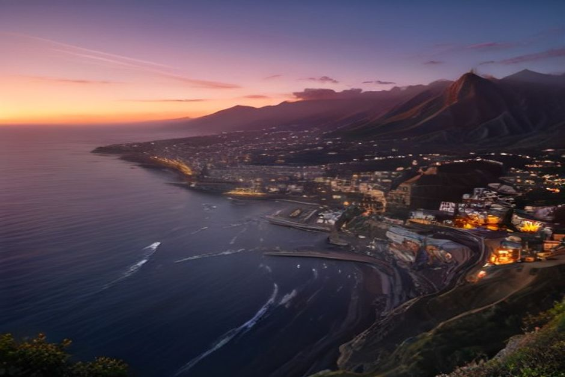
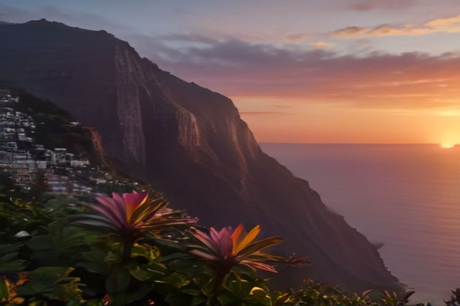

Wer einen Sonnenuntergang auf Madeira plant, fragt zuerst: Wo geht die Sonne hier eigentlich unter, und wo ist der Blick am schönsten? Kurz gesagt: im Westen, über dem offenen Atlantik. Die Südwest- und Westküste bietet dafür die freiesten Plätze. Hier finden Sie zehn davon, mit Anfahrt, Aufwand und dem, was jeweils für den Ort spricht.
Wo geht die Sonne auf Madeira unter?
Die Sonne versinkt im Westen, im Sommer etwas weiter nördlich, im Winter weiter südlich am Horizont. An der Süd- und Westküste liegt dort offenes Meer, und genau das macht diese Küste für Abendstunden so dankbar. An der Nordküste und im Inselinneren schieben sich dagegen oft Berge ins Bild.
Zur Uhrzeit: Madeira läuft auf portugiesischer Zeit, also eine Stunde hinter Mitteleuropa. Wer aus Deutschland, Österreich oder der Schweiz anreist, sollte die genaue Sonnenuntergangszeit für das eigene Reisedatum nachschlagen und nicht vom Heimatort ausgehen. Im Winter geht die Sonne deutlich früher unter als im Sommer.
Ein Hinweis zum Licht: Die schönsten Abende entstehen oft nicht bei wolkenlosem Himmel. Tiefe Wolkenbänke über dem Atlantik fangen die Farben auf und halten sie länger fest. Versprechen kann das niemand, es ist ein Geschenk, wenn es passiert.
Schönster Sonnenuntergang ohne Auto: Funchal
Wenn Sie keinen Mietwagen haben oder den Abend nicht lange planen wollen, bleiben Sie in der Stadt. Drei Orte eignen sich gut.
1. Miradouro do Pináculo
Die Terrasse am Hang oberhalb von Funchal schaut direkt über die Bucht: die Stadt, die Marina und der Kreuzfahrtterminal liegen unter dem Farbspiel. Mit einem kurzen Taxi ab dem Zentrum erreichen Sie ihn ohne Auto. In der Hauptsaison ist der Parkplatz früh voll, kommen Sie also 20 bis 30 Minuten vor Sonnenuntergang.
2. Praia Formosa
Funchals zentrumsnächster Strand blickt entlang der Bucht nach Westen. Die Sonne geht hier über dem offenen Wasser unter, nicht hinter den Hügeln, die im Stadtzentrum viel Himmel verdecken. Im Sommer kommen nach der Arbeit viele Einheimische her. Das gehört zum Reiz: Hier schaut Funchal selbst zu.
3. Avenida do Mar in der Zona Velha
Die palmengesäumte Promenade durch die Altstadt ist der Ort, um Ausblick und Abendessen zu verbinden. Während der Himmel hinter dem Hafen golden wird, füllen sich die Terrassen der Restaurants. Sie müssen danach nirgendwo mehr hinfahren.

An der Südküste: Dörfer, Klippen und freie Sicht aufs Meer
Westlich von Funchal reihen sich Orte, die für den Abend einen Abstecher wert sind. Mit dem Mietwagen oder Taxi sind sie gut zu erreichen.
4. Hafen von Câmara de Lobos
Der alte Fischerhafen wirkt wie eine Postkarte: bunt bemalte Boote, weiß getünchte Häuser am Hang und dahinter die Felswand von Cabo Girão, die das letzte Licht einfängt. Auch auf unseren Bootsfahrten ab Funchal ist Câmara de Lobos der erste Halt an der Küste, die Tagestour führt daran vorbei.
5. Skywalk am Cabo Girão
Die Klippe blickt fast genau nach Westen. Vom Glasboden des Skywalks stehen Sie 580 Meter über dem Wasser und sehen ungehindert aufs Meer hinaus. Im Sommer ist es voll, planen Sie daher Zeit für Parkplatz und Platz am Geländer ein: 20 bis 30 Minuten vor Sonnenuntergang sind sinnvoll.
6. Promenade von Ribeira Brava
Kiesstrand und Promenade unterhalb des Forts São Bento schauen auf offenes Wasser, der alte Festungsturm rahmt das Bild, wenn sich der Himmel färbt. Es ist ein Dorf, in dem gearbeitet wird, kein Aussichtspunkt für Busgruppen. Deshalb bleibt es auch in der Hochsaison ruhig.
7. Pier von Ponta do Sol
Ponta do Sol heißt übersetzt „Sonnenspitze“, und der kleine Pier an der Hafeneinfahrt macht dem Namen Ehre: Die Sonne sinkt von hier fast senkrecht ins Meer, kein Kap steht im Weg. Der Ort gehört zu den sonnigsten der Insel.
Weiter in den Westen: Calheta und Ponta do Pargo
8. Strand von Calheta
Der Sand in Calheta ist importiert und goldgelb. Der Strand liegt weiter westlich und etwas südlicher ausgerichtet als der Großteil der Küste, die Sonne steht dadurch länger sichtbar tief, bevor sie den Horizont berührt. Es ist ein echter Strand und kein felsiger Aussichtspunkt: die Wahl, wenn Sie bis kurz vor der goldenen Stunde im Wasser bleiben möchten.
9. Leuchtturm von Ponta do Pargo
Ponta do Pargo liegt am westlichsten Punkt Madeiras und verliert die Sonne als letzter Ort der Insel. Vom Leuchtturm auf der Klippe haben Sie einen völlig offenen Horizont. Der Preis dafür ist die Anfahrt: rund eine Stunde Fahrt ab Funchal. Dafür ist es hier deutlich ruhiger als an der Südküste. Wer hierher fährt, sollte Hin- und Rückweg im Dunkeln einplanen und nicht erst knapp vor Sonnenuntergang losfahren.
Der Sonnenuntergang vom Wasser aus
10. Mit dem privaten Boot ab Funchal
Alle Orte oben haben dieselbe Grenze: Sie stehen fest an Land, und irgendwann ragen Klippen, Dächer oder Bäume ins Bild. Vom Wasser sehen Sie in jede Richtung den freien Meereshorizont, die Farben spiegeln sich auf der Oberfläche, und das Boot kann sich in den letzten Minuten neu ausrichten, damit Sonne und Küste gemeinsam im Blick bleiben.
Genau dafür ist unser Sonnenuntergangs-Törn gedacht. Treffpunkt ist die Marina do Funchal, Ponton C. Das Boot legt 1 Stunde und 15 Minuten vor Sonnenuntergang ab, das ganze Jahr über. Sie haben zwei Möglichkeiten:
- 2 Stunden bis Cabo Girão: 400 EUR für das ganze Boot
- 2 Stunden 30 Minuten bis Ribeira Brava: 500 EUR für das ganze Boot
Die Preise gelten für das gesamte Boot, nicht pro Person. Das Boot gehört nur Ihrer Gruppe, mit bis zu 5 Gästen und zwei lizenzierten Skippern aus Madeira. Essen und Getränke an Bord, ein 360°-Video mit der Insta360, Drohnenaufnahmen (wenn das Wetter es zulässt) und Fotos mit einer richtigen Kamera sind inklusive. Einen Badestopp gibt es bei diesem Törn nicht, das Wasser ist um diese Uhrzeit ohnehin kühl, hier übernimmt das Licht den Hauptpart. Wer schwimmen möchte, wählt stattdessen die Tagestour mit Badestopp und Paddleboards bei Fajã dos Padres.

An Land suchen Sie sich einen Platz und warten, bis die Sonne kommt. Auf dem Boot folgen Sie dem Licht.
Tipps für den Abend
- Früh da sein: Die 20 Minuten vor und nach dem Moment, in dem die Sonne den Horizont berührt, sind die besten. Wer erst zum Sonnenuntergang eintrifft, verpasst das Schönste.
- Parkplätze: An beliebten Orten wie Cabo Girão und Pináculo sind sie im Sommer früh belegt.
- Kosten: Aussichtspunkte an Land kosten nichts und brauchen keine Reservierung. Ein Boot sollten Sie im Voraus buchen, vor allem im Juli und August.
- Flexibel bleiben: Bei Buchung über Chifbay können Sie bis 24 Stunden vor Abfahrt kostenlos stornieren.
Weitere Ideen zur Küste finden Sie in unserem Überblick zu den besten Bootstouren auf Madeira, alle Fahrten auf der Seite Erlebnisse, praktische Hinweise unter Praktisches und Stimmen unserer Gäste bei den Bewertungen.